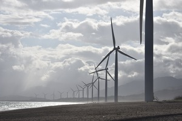

Process
Explore the transformative world of renewable energy—solar, wind, geothermal, hydropower, ocean, and bioenergy. These technologies offer cleaner, greener solutions for a sustainable future. Join us in uncovering their unique strengths and contributions to mitigating climate change. Welcome to the forefront of renewable energy.
Solar energy

Solar energy stands out as the most abundant among all renewable resources. Its harnessing capabilities are not limited to sunny days; even in cloudy weather, solar technologies can deliver heat, cooling, natural lighting, electricity, and fuels. The rate at which the Earth intercepts solar energy is about 10,000 times greater than humanity's energy consumption rate.
Although solar resource distribution varies globally, every country can make a significant contribution to its energy mix through direct solar energy. The cost of manufacturing solar panels has seen a substantial decrease in the past decade, rendering them not only affordable but often the cheapest source of electricity. With a lifespan of approximately 30 years, solar panels come in various shades, reflecting the diverse materials used in their manufacturing.
Wind Energy
Wind energy, a vital component of the renewable energy landscape, harnesses the kinetic energy of moving air masses. Wind turbines convert this energy into electricity, providing a clean and sustainable power source. Wind power is particularly advantageous due to its scalability, adaptability to different terrains, and relatively low environmental impact compared to traditional energy sources.
Harnessing wind power contributes significantly to reducing greenhouse gas emissions and mitigating climate change. As technology advances, wind turbines become more efficient and cost-effective, making wind energy an increasingly viable option for meeting global electricity demand. The harnessing of wind energy is emblematic of a transition towards a cleaner and more sustainable energy future.
Geothermal Energy

Geothermal energy taps into the Earth's internal heat, providing a reliable and sustainable source of power. This renewable resource is harnessed by extracting heat from the Earth's crust for various applications, including electricity generation and heating. Geothermal power plants operate with low emissions and a small environmental footprint, making them an eco-friendly energy solution.
Regions with active geothermal resources, such as geysers and hot springs, are particularly well-suited for geothermal energy production. With ongoing advancements in technology, the efficiency and accessibility of geothermal energy continue to improve, contributing to a diversified and sustainable energy mix.
Hydropower
Hydropower, derived from the energy of flowing water, is a crucial component of the renewable energy portfolio. It involves harnessing the kinetic and potential energy of rivers and other water bodies to generate electricity. Hydropower has a long history and is one of the most established renewable energy sources.
 Large-scale hydropower plants provide a significant share of global electricity, offering a reliable and consistent power supply. While the environmental impact of large dams has raised concerns, technological advancements, such as fish-friendly turbines and run-of-river systems, aim to minimize these effects.
Hydropower's ability to store energy and provide grid stability makes it a valuable contributor to the transition towards a more sustainable energy future.
Large-scale hydropower plants provide a significant share of global electricity, offering a reliable and consistent power supply. While the environmental impact of large dams has raised concerns, technological advancements, such as fish-friendly turbines and run-of-river systems, aim to minimize these effects.
Hydropower's ability to store energy and provide grid stability makes it a valuable contributor to the transition towards a more sustainable energy future.
Ocean energy
Ocean energy encompasses various technologies that harness the power of the ocean's waves, tides, and thermal gradients. These renewable resources offer a vast and largely untapped potential for generating electricity. Wave energy, generated by the motion of surface waves, and tidal energy, derived from the gravitational pull of the moon and sun, can contribute to a clean and sustainable energy mix.
 Ocean thermal energy conversion (OTEC) utilizes the temperature difference between warm surface water and cold deep water to generate power. While ocean energy technologies are still in the early stages of development, ongoing research and innovation hold promise for unlocking the immense energy potential of the world's oceans, providing a reliable and consistent source of renewable power.
Ocean thermal energy conversion (OTEC) utilizes the temperature difference between warm surface water and cold deep water to generate power. While ocean energy technologies are still in the early stages of development, ongoing research and innovation hold promise for unlocking the immense energy potential of the world's oceans, providing a reliable and consistent source of renewable power.
Bioenergy

Bioenergy harnesses the energy stored in organic materials, such as plants and biomass, for various applications, including heat, electricity, and biofuels. Biomass can be burned directly for heat or converted into biofuels like ethanol and biodiesel. Bioenergy plays a significant role in the renewable energy landscape, offering a versatile and accessible resource.
The carbon dioxide released during combustion is part of the natural carbon cycle, making bioenergy a potentially carbon-neutral energy source when managed sustainably. However, careful consideration of land use, feedstock selection, and environmental impacts is crucial to ensuring the sustainability of bioenergy production. As technology advances, the efficiency of bioenergy processes improves, contributing to a more sustainable and diversified energy portfolio.